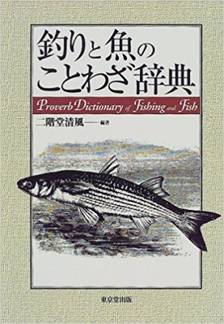

本棚から
釣りと魚のことわざ辞典 二階堂清風 編 東京堂出版 刊
久しぶりに大きな書店に行ったら良い本を見つけました。帯のコピーには、
「昔から言いつがれた日本各地の「ことわざ」と「俗信」のかずかず！！
とあります。

身につまされたことわざを引用しますと、
「木に縁りて魚を求む」
「釣り好きな百姓は子を飢えさす」
「夏山女魚一里１尾」
などがあります。これらの意味が知りたい方は、どうぞこの本をお買い求めください。（笑） 編纂に15年以上がかけられている名著で、一家に一冊の価値を保証します。1998年7月に出版された本ですが、2018年現在でもアマゾンで入手できるようです。
編者の二階堂清風さんは、昭和二年の北海道生まれの方で、渓流釣りの大ベテラン。たくさんの著作がありますので以前よりお名前は存じ上げておりました。私の父より四歳年が上、ほとんど同年輩なのですね。
私の父の口癖は、「逃げた魚は大きい」
祖父の口癖は、「見えている魚は釣れん」
でした。
私が大学時代によく読んでいた、児童文学作家の灰谷健次郎さんのエッセイの中には、
「本は買って読め、家は借りて住め」
ということわざがありました。また、東京のとある古書店の玄関には、
「汗で知って読書で磨け」
という額が掛かっていると聞いたことがあります。
追記：著者の二階堂氏からメールを頂きました！
件名: 二階堂清風です
日付: 2001/09/16 （日）
初めまして。この歳になって時流に後れまいと、パソコンを求めあれこれいじくり回しているうちに貴方が作られた拙著のことを知りました。奇特な方もおられるものと感心したり感謝したり。この本の前から私のことを覚えていてくれたようで、更に感謝しております。
ところで、貴方がどういうお方か皆目分かりません。itoとありますから「伊藤 稔」さんでしょうか。いや、歳が違い過ぎるような気もします。一度メールでご素性をお知らせ下さい。
今回はこの程度の一言でこ゜挨拶に代えさせて頂きます。
注：伊藤 稔氏とは、
1949年生まれ 岩手県出身 岩手県在住
アユ釣りでは、様々な大会で優勝を経験。
渓流釣りでは、ヤマメの適水勢理論、ナチュラルドリフト釣法など、常に新釣法を模索する実践派。 極限の細糸仕掛けを用いた「零釣法」を完成させた日本を代表する渓流釣りのエキスパートである。
引用：テレビ大阪ウェブサイト
件名: お便りありがとうございました。
日付: 2001/09/17（月）
二階堂様、ホームページご訪問と、電子メールありがとうございました。
ホームページ 「フィッシュアンドティップス」を作っております、伊藤剛と申します。
私は、昭和３７年生まれの愛知県出身で、主に渓流釣りを趣味としています。
現在、ニュージーランドはハミルトン市にあります、ワイカト大学で、魚の生態学・魚道の勉強をしています。
伊藤稔さまほど、腕は確かではありませんが、下手の横好きで、釣りばかりしております。
曾祖父の代から４代続く、釣り好きの家系であります。
釣りと魚のことわざ辞典 は、９８年頃に買ったのですが、荷物が多くなるので、今は日本の実家においてあります。でも、こんどまた荷物をニュージーランドに送るときには、ぜひいっしょに送ろうと思います。
ご丁寧にもメールを下さり、まことにありがとうございました。今後ともよろしく御願いいたします。